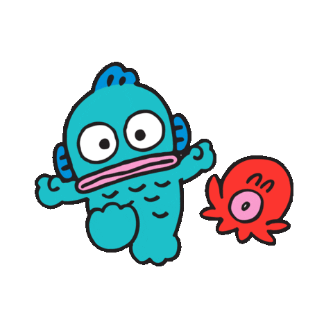

I'm a full-stack developer raised and currently residing in Irvine, California 🏖
Currently spending my time exploring the Web3 rabbit hole and all it has to offer 🐰🕳
For context on the sea monster, it is Hangyodon, which a friend has designated as my Sanrio alter-ego. Hangyodon is described as "a nice guy who loves to make others laugh, but has a soft spot and doesn't like being alone"
